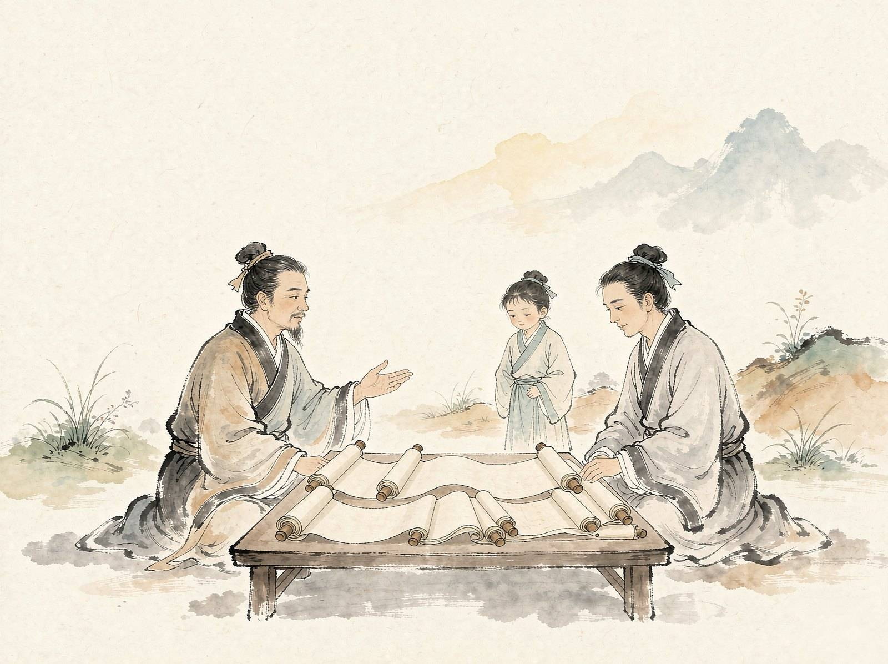

孟子者，七篇止。讲道德，说仁义
四书里第二部是《孟子》，全书一共七篇。
和《论语》不一样，大多是孟子自己与人辩论、阐发道理，再由弟子润色定稿。
孟子讲性善、讲仁义、养浩然之气。
文字论辩锋利，是为破除当时的异端邪说；我们读的时候，要抓住背后的本心，不要只学争辩。

孔孟四书，归根就是讲道德、说仁义。
道是天地本来的道理，德是我们守住本心的修养；仁是心中的恻隐关爱，义是做事知道分寸、取舍端正。
不是拿来要求别人的条条框框，是用来安顿自己、待人处事的本心标尺。
讲说只是方便，要在日常里实实在在去做。

落到心上理解
承接上一课存疑：没有圣人当面答疑，如何避免错解？
《论语》多是简短提点，留白多，很容易随后人见识曲解；《孟子》七篇，层层铺展、反复推明性善仁义，相当于把孔门隐而不发的内核展开。
“止”，是定本到此为止，不是义理到此停止。读《孟子》，借他的论辩帮自己勘破心中私欲、邪见；但不可贪恋辩才，以胜人为目标，辩而不执，才是无住。
另有一问：孟子雄辩何以不生我慢，守住为己之学。
辩、讲、说，都只是手段；目的是明道德、行仁义，向内打磨自己，不是向外压服他人。
道本无言，仁义无形，不得已而讲说。听懂之后，要回到自心体察：恻隐便是仁，取舍合度便是义，不向外空谈道理。知言说为筏，得意忘言，即是无住。
慕孟子雄辩，专学口舌争胜；以道德仁义为外在戒律，专门评判苛责他人
辩为破惑明义，目的是显发性善本心；道德为本心之体，仁义是自身践行的标尺，反求诸己
- 《孟子》一书，传世定本共七篇。
- 文体不同于《论语》，多是孟子主动论说、辩难，系统性更强。
- 雄辩是手段，用来扫除迷惑、显发性善。
- 篇目是载体，核心是体会人人本有的善性，存养浩然之气。
- 四书孔孟一脉，核心宗旨，便是讲明道德、阐说仁义。
- 道是本然之理，德是身心涵养；仁主感通，义主裁断。
- 这些不是用来指责别人的标准，是反观修养自己的方向。
- 讲说只是方便引导，真正的道德仁义，要落在一言一行之中。
一、勘俗见。对比《论语》成书差异，区分两部书的特质。同时说明，“七篇止”指通行定本，不是孟子说过的话只有这些。破除一个普遍误解：道德仁义不等于死板礼教。它的根源是内在本心，不是外部强加的束缚。
二、现代对照。如同一套系统论述的讲义，层层论证一个核心主张，和零散的问答笔记，学习方式不一样。如同内心的导航。道是底层规律，仁义是导航的方向，帮我们在选择的时候守住分寸与善意。
三、承接常变主线。传本篇句会有异文、校勘修订（可变之相）；性善、仁义、存心养性的宗旨不变（常）。外在仪文、表达形式可以随时代调整（可变之相）；本心的道德、仁义内核不变（常）。
四、承接教与学二分。师长辨析论辩背后的本心，属于施教一侧；学人借文字反观自心，不逞口舌，是自主修习。师长讲清道德仁义的本义，属于施教一侧；学人对照自心，在小事里实践，是自主修习。
承接选择力练习：读孟子，善用论辩义理破自心之惑，不执言辞胜负。
孟子者，七篇止。讲道德，说仁义
一字义与句读
孟子，孟轲；七篇：《梁惠王》《公孙丑》《滕文公》《离娄》《万章》《告子》《尽心》；止，定本止于此七篇。
上句释义：《孟子》这部典籍，传世的定本为七篇，以此为限，是四书之中承接《论语》的重要典籍。
道，寂然本体，万物本然之理；德，得道而存于己，自性之显；仁，一体不忍之心；义，应事裁断之宜。
下句释义：孔孟论语、孟子七篇，其立教本旨，便是讲明大道、显发内德，阐说仁义，引导人返归本心，落在人伦践行。
二命题考辨
（1）孔孟之间的转进
孔子多是因材施教，点示仁体，少做大段体系论证；到孟子之时，杨墨之说盛行，仁义之道受到冲击，所以孟子不得已而起辩，把孔门隐微的性善之义、仁义内在，系统铺陈出来。
《论语》是“指月”，随手指点；《孟子》是画出地图，讲明路径，告诉你何以本心为善，何以扩充四端、养浩然之气。
“七篇止”，是蒙学一句平实的版本说明：我们研读四书，以这七篇为核心文本，不漫无边际搜罗杂说。
（2）对照当下现代语境
今人读《孟子》，最容易陷入两个方向：
一是欣赏辩论逻辑，学话术，用来在争论里压倒别人；
二是觉得性善之说只是一个哲学观点，放在外面评判、辩论，不肯回来看自己的恻隐、羞恶之心。
孟子的本意：辩，是为了息邪说、正人心；论说，是为了唤醒本有的善端，不是向外争胜。
今天很多人一谈道德，便生出抵触，觉得是道德绑架。根源就是本末倒置：把仁义道德变成向外审判他人的工具。
本句给出儒门原点：道德仁义，首先是为己之学，是打磨自己，不是审判别人。讲说，是启发自觉，不是居高临下的规训。
（3）般若范式互参
七篇论说，都是教化假名。
道德、仁义这些名目，都是教化假名。
联动三才五蕴太极空杯模型：性善之体如同杯中空性，本来具足；七篇文字，是详尽的指引说明，帮我们拨开后天习气遮蔽。文字说明不是空性本身，借文字唤醒自性，得意便不被篇章束缚。道如同杯中空性，本自具足；仁义之德，是空性在人事上的显化。讲说文字，是指引的路标；路标不是虚空，借路标回归自性，不执名相。
呼应“本乎数”：七为奇数，主生发，推扩向上，由四端扩充而至于仁，是生生不息之象。道一，德二，仁义成对，体用相济，阴阳和合。
延伸义理：
《金刚经》：无有定法可说，孟子立性善，也是对治当时性无善无恶、性恶等偏执的方便。离一切相而行善法，和此处仁义践行可以互参：行仁义而不执仁义之相。
《道德经》：大辩若讷。孟子之辩，是不得已之辩，非好辩。失道而后德，失德而后仁，失仁而后义，是另一层勘破；儒门立足世间，以仁义复归于道德。
《坛经》：何期自性，本自清净；和孟子性善，同是直指自性，路径一禅一儒。一行三昧，直下见性；儒门以仁义日用，循序渐进，路径不同，皆以本心为根。
（4）四书体系的收束
前面由小学筑基，入四书，先《论语》应机点示，再《孟子》系统推阐，到此一句，收拢四书大义。
《论语》多在当下人事指点仁，《孟子》立性善、扩四端，都是“讲道德，说仁义”的不同路径。
道，在儒门，不是玄虚天外之理，就在人伦日用；仁义，不是悬空理念，就是当下一念恻隐、一事取舍。
三跨典互参（老庄、般若对照）
· 《道德经》：大道废，有仁义。孟子在仁义被埋没之时，阐发仁义，是救时之论。上德不德，是以有德。正是提醒，德不可执为表象。
· 《庄子》同样好辩，而意在泯是非；孟子之辩，意在立仁义之大本。：《庄子》同样好辩，而意在泯是非；孟子之辩，意在立仁义之大本。
· 串联前文：自天地人伦立本心；建立治学次第；入四书，先读《论语》应机善言；继而转入《孟子》七篇，系统推明性善仁义，把孔门心法由提点转为体系阐发。蒙学治学次第，由识字训诂、立初学次序，升阶四书；从《论语》应机善言，到《孟子》性善辩说，至此总括宗旨——全部研读，最终都是为了明道德、行仁义。
· 《庄子》：仁义，先王之蘧庐也，止可以一宿而不可久处。是勘破仁义名相，回归大道。
四和前面课程的张力
次第链条：……→ 群弟子，记善言 → 孟子者，七篇止 → 讲道德，说仁义
呼应“人不学，不知义”：《孟子》把仁义内在、性善之义铺展开来；学四书，就是明道德仁义之义；
呼应“玉不琢，不成器”：借七篇义理，雕琢习气，扩充善端；以道德仁义打磨心念习气；
呼应“教之道，贵以专”：专一在性善本心，不在言辞辩论上向外求胜。专一在本心仁义，不向外追逐文辞辩说。
五1. 孟子言性善，是说“全善无染”，还是“有善端，可以扩充”？
2. 孟子的浩然之气，和老庄、般若所说的心性，分界在哪里？
3. 雄辩最容易生我慢，读《孟子》，如何守住“为己之学”而不向外争是非？
4. 老庄言“失道而后德，失德而后仁”，和儒门以仁义复道，二者如何圆融，而不互相冲突？
5. 仁义是本心发用，何以同样是行仁义，有人落入伪善？分界在哪？
6. 如何在权变之中，守住仁义根本，不借“变通”之名行私欲？